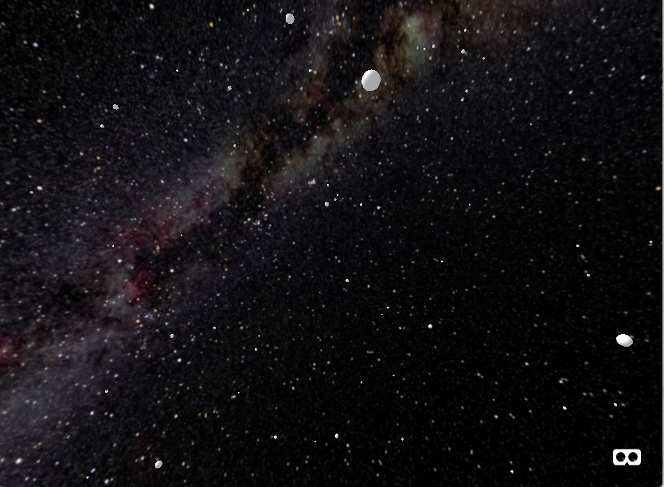
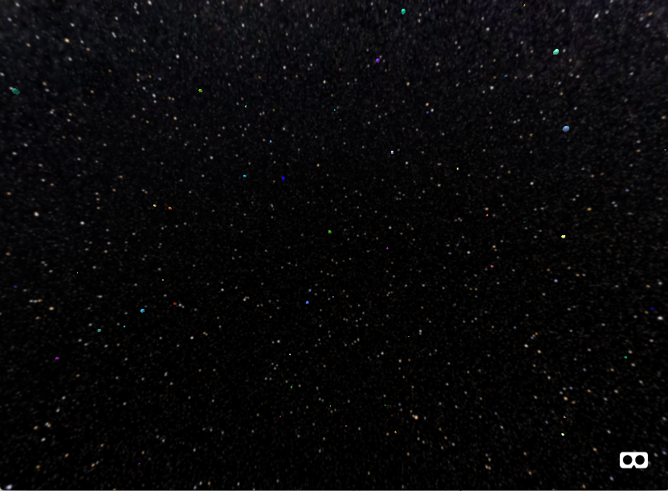

Maz and I started with a basic black background with a bunch of white objects, just to start off and test out the virtual environment, as seen in the project proposal
The next step was finding a more accurate background, one that makes you feel like you're in space. I looked through epirectangular images of 'space' on Google (which was a vague query in and of itself) and found an image of a galaxy someone pieced together to form an epirectangular image. I then changed the code such that the same number of planets (350) were more randomly distributed across a larger range. To do this, I simply raised the max value within the random number generator for the x, y, and z values. At this point we had this:
Another issue is figuring out which planets have 'life', so to speak. The simplest way to distinguish dead planets from planets with life would generally be with color. So, I set the planets to random colors to see how it would look against the dark background:
The darker colors are difficult to distinguish against the background, so we will keep the colors light, for planets with life.
We have also implemented y-axis movement for the user, and are testing out rotation and movement (link above to see planets moving)
So, the next steps are randomly selecting planets to be colored (i.e. life!), using OOP to distinguish behavior of non-life planets from planets with life, generating/distributing more planets as the user moves, and determining a 'center' of the universe, or a general goal (maybe find a certain number of planets with life, etc...)